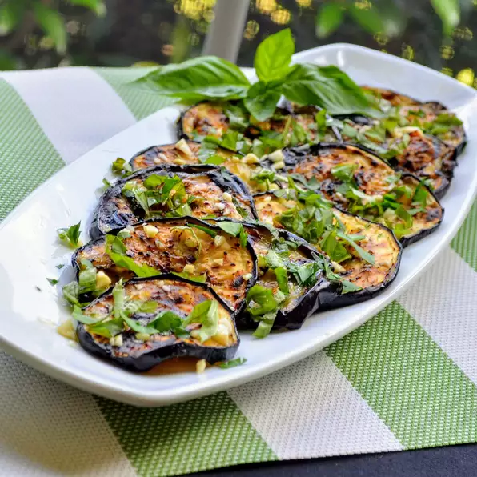

Italian Grilled Eggplant

This side dish (or "contorno" if you want to use the Italian word) couldn't be easier! We make this often during the summer when we have an abundance of basil and parsley growing in our garden. Works well with zucchini, too.
Ingredients
- 1 eggplant, sliced into 1/2-inch rounds
- ⅓ cup extra virgin olive oil
- 2 cloves garlic, minced
- ⅛ teaspoon salt
- 2 tablespoons chopped fresh basil
- 2 tablespoons chopped fresh basil
Steps
- Preheat an outdoor grill for medium-high heat and lightly oil the grate.
- Brush eggplant lightly with olive oil on both sides. Stir together remaining olive oil, garlic, and salt in a small bowl.
- Arrange eggplant slices on the preheated grill and cook, turning occasionally, until tender and browned, 3 to 4 minutes per side.
- Arrange grilled eggplant on a platter. Brush with olive oil and garlic mixture until eggplant has absorbed oil. Sprinkle with chopped basil and parsley and serve.